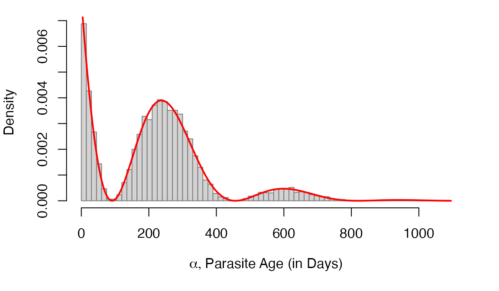
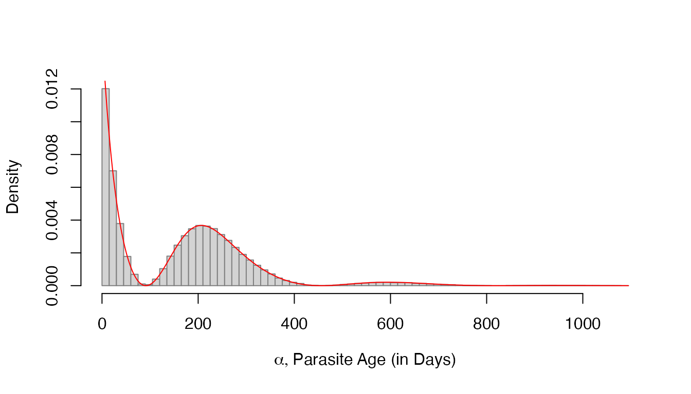

Random Variables for Parasite Infection Dynamics
Computing the MoI, AoI, and AoY
Dynamics.RmdWe have derived mathematical formulas that describe the dynamics of malaria infections as random variables in cohorts of humans as they age (Henry JM, et al., 2024)1 This R package is the computational companion.
In the following, we review the mathematical formulas and the
functions in ramp.falciparum that compute the multiplicity
of infection (MoI), the age of infection (AoI), and the age of the
youngest infection (AoY).
Formulas and Computation
-
Let \(z_\tau(\alpha,a)\) denote the density for infections of age \(\alpha\) in a host cohort of age \(a\) born on day \(\tau\).
The dynamics of \(z(\alpha,a)\) are described by the following: \[ \frac{\partial z}{\partial a} + \frac{\partial z}{\partial \alpha} = - r z \] with the boundary condition: \[ \begin{equation} z_\tau(0,a) = h_\tau(a). \end{equation} \] Its solutions are given by: \[ z_\tau(\alpha,a) = h_\tau(a-\alpha) e^{-r \alpha} \]
The function
zdacomputes \(z_\tau(\alpha, a).\)
-
The mean MoI is given by the formula: \[ m_\tau(a) = \int_0^a z_\tau(\alpha, a) d \alpha \]
The distribution of the MoI is Poisson (Nåsell I, 1985)2 with mean \(m_\tau(a).\)
The function
meanMoIcomputes \(m_\tau(a)\) usingzda
The true prevalence is the \[ p_\tau(a) = 1 - e^{-m_\tau(a)} \] The function
truePRcomputes the true prevalence usingmeanMoIThe density function for the age of infection (AoI) is \[ A_\tau(a) \sim f_A(\alpha, a, \tau) = \frac{z_\tau(\alpha,a)}{m_\tau(a)} \] and its moments are \[ x_n(a, \tau | h) = \int_0^a \alpha^n f_A(\alpha, a, \tau) d \alpha \]
-
The age of the youngest infection (AoY) is defined as: \[ Y_\tau(a) \sim f_Y(\alpha, a, \tau) = \min_{\zeta \sim M_\tau(a)} \left\{ \alpha_i \right\}_{i=1}^\zeta, \alpha_i \sim A_\tau(a) \]
The density function can be expressed in terms of the density and distribution functions of the AoI and MoI. \[ f_Y(\alpha; a, \tau) = f_A(\alpha, a,\tau) e^{-m_\tau(a) F_A(\alpha, a,\tau)} \frac{m_\tau(a)}{p_\tau(a)}. \]
The distribution function for the AoY is: \[ F_Y(a) \sim \frac{1-e^{-m_\tau(a)F_A(\alpha, a,\tau)}}{1-e^{-m_\tau(a)}} = \frac{1-e^{-m_\tau(a)F_A(\alpha, a,\tau)}}{p_\tau(a)} \label{FY} \]
Its moments are: \[ y_n(a, \tau | h) = \int_0^a \alpha^n f_Y(\alpha | a, \tau, h) d \alpha \]
-
We also developed functions to compute the age of the youngest of \(N\) infections, called YoN \[ N_\tau(a) \sim \min_{N} \left\{ \alpha_i \right\}_{i=1}^N \mbox { where } \alpha_i \sim A_\tau(a) \]
The distribution function for YoN, \(N_\tau(a)\), is \[F_N(\alpha, a, t) \sim 1- (1-F_A(\alpha, a, \tau))^N\] The following is a summary table of functions to compute the MoI, AoI, AoY, and all their moments.
The density function for YoN is found by differentiating:
\[f_N(\alpha, a, t) \sim N (1-F_A(\alpha, a, \tau))^{N-1}\frac{f_A(\alpha, a, \tau)}{m_\tau(a)}\]
Quick Reference
The following is a summary table of functions to compute the MoI, AoI, AoY, YoN, and all their moments.
| MoI | AoI | AoY | YoN | |
|---|---|---|---|---|
|
\(\zeta\) | \(\alpha\) | \(\alpha\) | \(\alpha\) |
|
\(\zeta \geq 0\) | \(0 \leq \alpha \leq a\) | \(0 \leq \alpha \leq a\) | \(0 \leq \alpha \leq a\) |
| Random Variable | \(M_\tau(\zeta, a, h)\) | \(A_\tau(\alpha, a, h)\) | \(Y_\tau(\alpha, a , h)\) | \(N_\tau(\alpha, a, h)\) |
| Density Function | \(f_M(\zeta, a, h)\) | \(f_A(\zeta, a, h)\) | \(f_Y(\zeta, a, h)\) | \(f_N(\zeta, a, h)\) |
|
dpois | dAoI | dAoY | dYoN |
| Distribution Function | \(F_M(\zeta, a, h)\) | \(F_A(\zeta, a, h)\) | \(F_Y(\zeta, a, h)\) | \(F_N(\zeta, a, h)\) |
|
ppois | pAoI | pAoY | pYoN |
| Random Numbers | \(\hat M_\tau(\zeta, a, h)\) | \(\hat A_\tau(\alpha, a, h)\) | \(\hat Y_\tau(\alpha, a , h)\) | \(\hat N_\tau(\alpha, a , h)\) |
|
rpois | rAoI | rAoY | rYoN |
| Moments | \(m_\tau(a, h)\) | \(x_n(a, \tau, h)\) | \(y_n(a, \tau, h)\) | |
|
meanMoI | momentAoI | momentAoY |
Demonstration
Force of Infection (FoI)
To compute anything, we must first set up a function to describe exposure (see the FoI vignette). We define functions that plot the FoI for a cohort as it ages (in red), but we can also compute the population average FoI (in black). Different cohorts would experience different histories of exposure.
Computing zda
The function ramp.falciparum::zda(alpha, a, FoIpar, ...)
uses the formula in Eq. 1 to compute the density of parasite infections
in a cohort of humans as it ages.
Using zda, we can compute the density of parasites in a
cohort of any age without solving a full system of equations. Given a
function describing the FoI in the population, \(h(t)\), and the cohort birthday, \(\tau.\)
alpha = 60
a = 6*365
zda(60, 6*365, foiP3) ## [1] 0.001601196The following computes the density of infections of every age in a cohort of age 3.
When we plot \(z_\tau(\alpha, a)\), we note that as \(\alpha\) grows larger, the parasite cohort gets older. When we plot parasite cohorts by age, time is going backwards on the x-axis.

Now, we can imagine what zda would look like for several
different host cohorts at age three, but who were born at different
times. In effect, we are taking a snapshot of the cohorts at the same
age, but at different times.
The curves are different because the hosts were born at different months, and they thus experienced different levels of exposure over the first two years of life. Here the annual FoI is 5 infections, per person, per year (\(\bar h = 5/365\)):

Multiplicity of Infection (MoI)
We define a random variable \(M\) describing the multiplicity of infection (MoI). The distribution of the MoI is Poisson (see the MoI vignette).
\[M_\tau(a) \sim f_M(\zeta; a, \tau) = \mbox{Pois}(m_\tau(a))\]
Since \(z_\tau(\alpha, a)\) describes the density of all infections of age \(\alpha\) in a cohort of age \(a\), the density of all infections must be the MoI. Since \(0 \leq \alpha < a\), it must be true that:
\[\begin{equation} \tag{2} m_\tau(a) = \int_0^a z_\tau(\alpha, a) d \alpha \end{equation}\]
The function that computes \(m_\tau(a)\) is called
meanMoI.
mm = meanMoI(a3years, foiP3, hhat=5/365)Here, we plot the average MoI in the host cohort as it ages:
Age of Infection (AoI)
We define a random variable \(A_\tau(a)\) that describes the age of infection (AoI), which is given by the formula
\[ A_\tau(a) \sim f_A(\alpha; a, \tau) = \frac{z_\tau(\alpha,a)}{m_\tau(a)} \]
The Density Function, dAoI
We can compute \(A_\tau(a)\) using
the density function dAoI:
Now, as we plot the distribution of the AoI in cohorts at age two, born at different months (as we did above), we notice that the distributions have changed shapes:
The Distribution Function, pAoI
The distribution function for \(A_\tau(a)\) is:
\[ F_A(a) \sim \int_0^\alpha f_A(\alpha; a, \tau) d\alpha \]
If our functions work correctly, then we should get approximately the
same answer from computing the cumulative sum of dAoI.
F_A_alt = cumsum(f_A)We shouldn’t expect the answers to be exactly the same, but they
should be close, with the pAoI in black.
par(mar = c(5,4,1,1))
plot(a3years, F_A, type = "l",
xlab = "Parasite Cohort Age",
ylab = expression(1-F[X](alpha, a, tau)), lwd=3)
lines(a3years, F_A_alt, col = "red", lwd=2, lty =2)Random Numbers, rAoI
The function rAoI uses pAoI to generate
random numbers from \(F_A(\alpha)\)
rhx = rAoI(10000, 3*365, foiP3)A simple visual check computes the empirical CDF for the random
variates against \(F_A(\alpha)\)
computed using pAoI
par(mar = c(5,4,1,2))
plot(stats::ecdf(rhx), xlim = c(0,1095), cex=0.2, main = "",
xlab = expression(list(alpha, paste("Parasite Age (in Days)"))),
ylab = expression(list(F[A](alpha), paste("ecdf"))))
lines(a3years, F_A, col = "red", lty = 2, lwd=2)We can also plot the distribution functions.

AoI Moments
Let \(x\) denote the first moment of of \(A_\tau(a)\): \[x_\tau(a) = \left< A_\tau(a) \right> = \int_0^\infty \alpha \frac{z_\tau(\alpha, a)} {m_\tau(a)}\]
Similarly, we let \(x_\tau(a)[n]\) denote the higher order moments of \(A_\tau(a)\): \[x_{[n]}(a, \tau) = \int_0^\infty \alpha^n \frac{z_\tau(\alpha, a)} {m_\tau(a)}\]
moment1 = momentAoI(a3years, foiP3)
moment2 = momentAoI(a3years, foiP3, n=2)
moment3 = momentAoI(a3years, foiP3, n=3)The first three moments of the AoY plotted over time. In the top plot, we’ve also plotted the \(n^{th}\) root of the \(n^{th}\) moment.
Age of the Youngest Infection (AoY)
We have derived a random variable \(Y_\tau(a)\) describing the age of the youngest infection (AoY). The density function for the AoY is:
\[Y_\tau(a) \sim f_Y(\alpha; a, \tau) = f_A(\alpha, a,\tau) e^{-m_\tau(a) F_A(\alpha, a,\tau)} \frac{m_\tau(a)}{p_\tau(a)}\] The distribution function is:
\[F_Y(a) \sim \frac{1-e^{-m_\tau(a)F_A(\alpha, a,\tau)}}{1-e^{-m_\tau(a)}} = \frac{1-e^{-m_\tau(a)F_A(\alpha, a,\tau)}}{p_\tau(a)} \]
The derivations are found in a Suppplement to Henry JM, et al. (2024).
The mean AoY is:
\[ \left< Y_\tau(a) \right> = \int_0^a \alpha \; f_Y(\alpha, a, \tau) \; d\alpha \]
And the higher order moments for the AoY are:
\[\left< Y_\tau(a)^n \right> = \int_0^n \alpha^n \; f_y(\alpha, a, \tau) \; d\alpha \]
AoY Density, dAoY
The density function is computed with the function
dAoY.
f_Y = dAoY(a3years, 3*365, foiP3)We can compare \(f_Y(\alpha)\) (in black) to \(f_A(alpha)\) (in grey).
Random Variables, rAoY
raoy = rAoY(10^5, 3*365, foiP3)
hist(raoy, breaks=seq(0, 1095, by = 15),
right=F, probability=T, main = "",
xlab = expression(list(alpha, paste("Parasite Age (in Days)"))),
border = grey(0.5)) -> out
lines(a3years, f_Y, type = "l", col = "red") 
AoY Moments
aa = seq(5, 3*365, by = 5)
moment1y = momentAoY(aa, foiP3)
moment2y = momentAoY(aa, foiP3, n=2)
moment3y = momentAoY(aa, foiP3, n=3)The first three moments of the AoY plotted over time. In the top plot, we’ve also plotted the \(n^{th}\) root of the \(n^{th}\) moment.
Next:
- In the vignette MoI, we show that the mean MoI computed using the formula in Eq. 2 gives the same answer as other approaches.
Henry JM, Carter AR, Wu SL, Smith DL (in preparation). A Probabilistic Synthesis of Malaria Epidemiology: Exposure, Infection, Parasite Densities, and Detection.↩︎
Nåsell I (1985). Hybrid Models of Tropical Infections, 1st edition. Springer-Verlag. https://doi.org/10.1007/978-3-662-01609-1↩︎